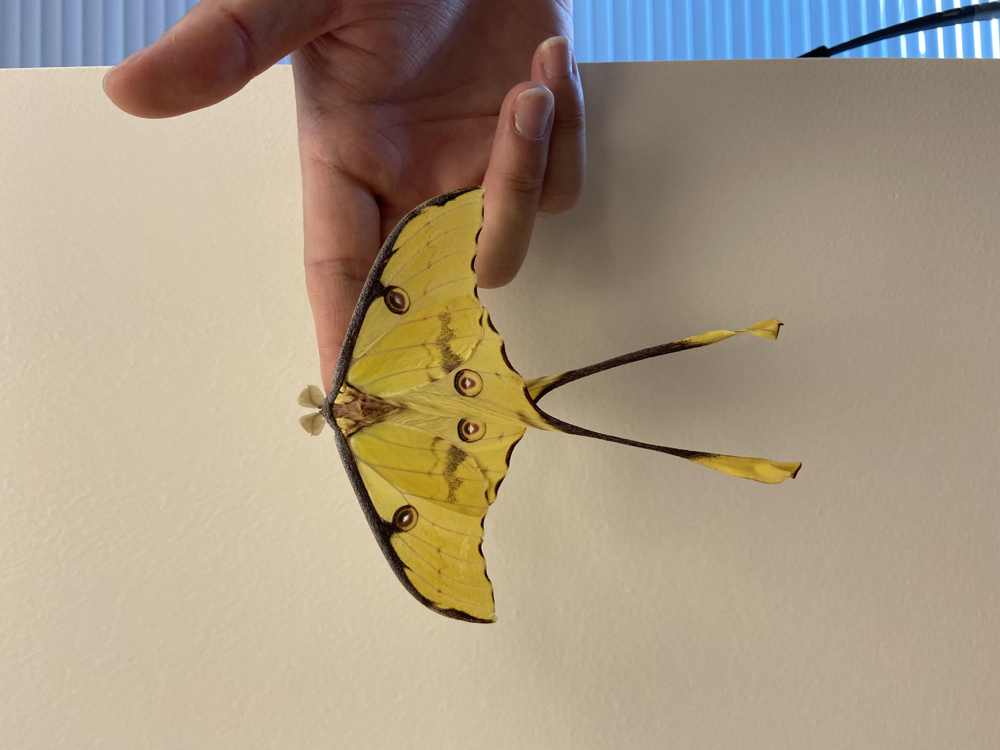
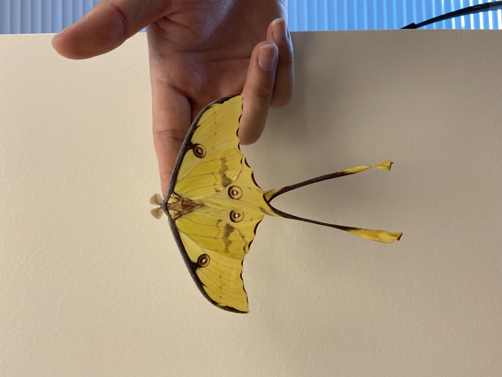
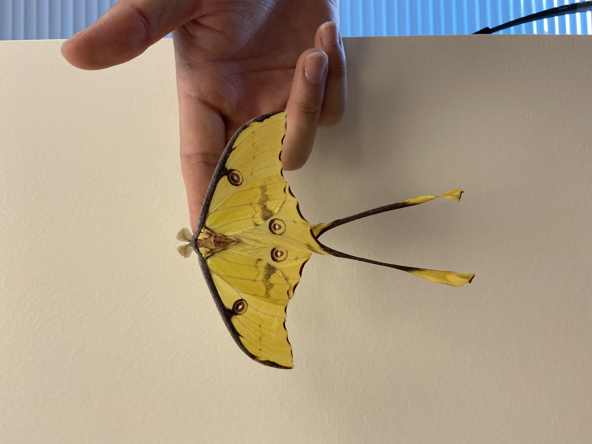

Andy Ho
I am here at University of California, Riverside to pursue a college education and explore different aspects of my life. I will spend my next four years here to find my true passion and prepare how to pursue this passion in my future career. I want to become a veterinarian and plan to achieve this goal by balancing my academic and social life in college and finding new opportunities through internships and volunteering. I need to make sure I obtain the best grades I can through efficient study habits, so I will be able to attend my dream school, UCLA School of Medicine.
My greatest strength is my ability to work well with others and cooperate for the better of the company. Additionally, I am very open-minded and willing to hear and better understand the opinions and views of others. I am willing to make sacrifices in order to reach a common goa, which ties in with how I am very sociable and easily get along with people I just met.
My overall career goal is to pursue medicine but specifically a career in pediatric oncology, and I believe the Health Scholar program will provide me essential personal and professional skills that will help accomplish my career goal and accompany me for my future endeavors. I believe that the program will better my communication abilities through interacting with patients and health care staff, and I understand that these abilities are pivotal for a career in medicine and even more for a career in pediatric oncology. Although I know that I will not necessarily be working with children as patients, any communication experience with patients will still be beneficial and provide me with necessary practice, especially in comforting and understanding their needs. Furthermore, building strong relationships with health care staff through the program will allow me to gain a better insight into careers in medicine and the administrative aspects of health care. Working with health care staff and leaders will also provide me with the opportunity to receive advice on task management and work-life balance that will help prepare me for the journey ahead of me to accomplish my career goal. I am confident that the program can aid me with knowledge of effective patient care, which is imperative in the field of pediatric oncology, and I believe the only method to learn effective patient care is through direct experience. In addition, the specialties rotation of the program will provide me with great insight into a variety of health care areas that I might have not considered before. Although I am currently set on pursuing a career in pediatrics or pediatric oncology, I am open to attaining experience with different specialties of medicine to witness others' passions in effect.
Experience
Peer Educatorr
• Tutor college freshman students in Algebra and Pre-Calculus
• Guide students through transition from high school to college
• Encourage good work ethics and instilled self-confidence
Undergraduate Research Assistant
• Perform weekly cockroach rearing and maintenance
• Aid in setting up experiments and carrying out data collection at selected time intervals
• Run analysis of data to determine Lethal Dose (LD50) and Lethal Time (LT50) of various bait toxicants
Recreation Leader
• Responsible for children aged four to twelve
• Organized and planned a variety of games and sports
• Communicated with parents about how their children were doing at camp
Education
University of California, Riverside
Portfolio
 

.png)
.png)
